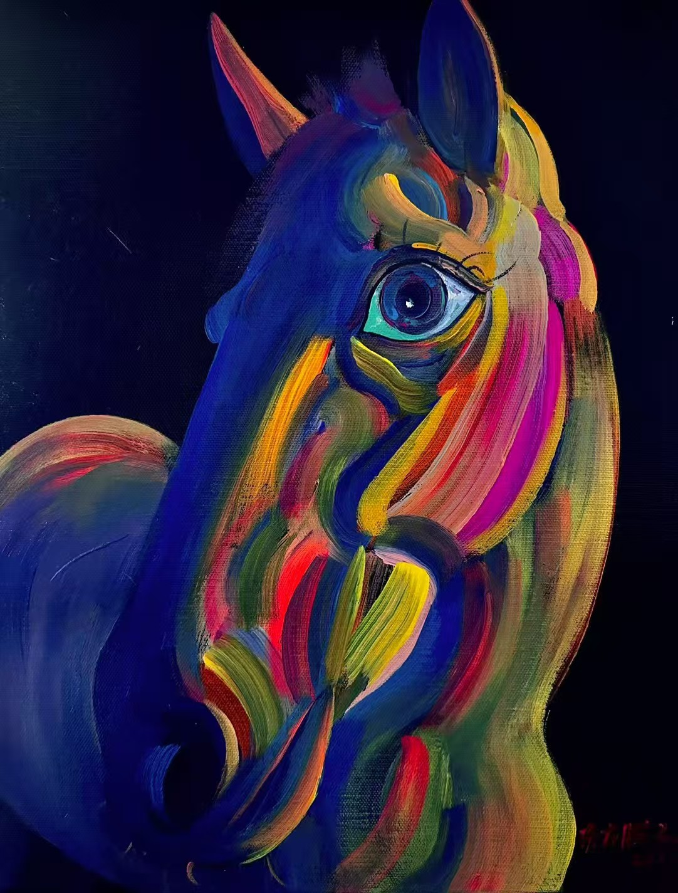

2025
Colección del Real Colegio de Arte (RCA) y Beaux-Arts de París (BADP)
Serie Tótem de Vida coleccionada por instituciones de arte líderes mundiales
Casi medio siglo de exploración y presentación artística

Serie Tótem de Vida coleccionada por instituciones de arte líderes mundiales

Escaparate de arte contemporáneo en la institución de arte más importante del mundo

Pintura al óleo Monje Viajero y obra de papel Potro Blanco presentadas en la encrucijada del mundo